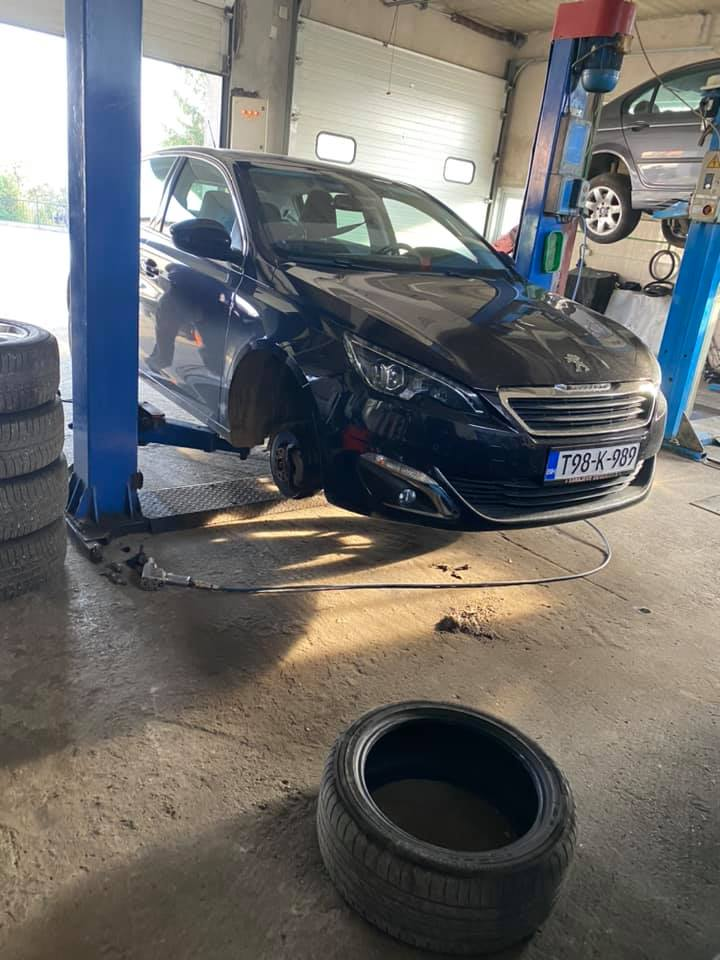

Ledno penjanje ili ice climbing se razvilo iz zimskog alpinizma u cilju pomijeranja granica, kao i sportsko penjanje. Smatra se najtežim i najopasnijim oblikom alpinizma, a naš je izazov i zadovoljstvo pružiti vam tu uslugu uz sve sigurnosne aspekte i provesti vas zaleđenim slapovima Prenja, Visočice i drugih područja.


Sportsko penjanje razvilo se iz alpinizma, u cilju slobodnog prepenjavanja prije nezamislivih pravaca. Scorpio je pokretač sportskog penjanja na podrucju BiH. Prvo sportsko penjalište opremio je Scorpio u Kamenolomu kod Zenice, zatim jedno od najvecih i najljepših - Drežnicu kod Mostara. Scorpio vrši obuke i kurseve iz oblasti sportskog penjanja.


Turno skijanje, eng. Ski mountaineering - planinarenje na skijama zimi, bez kojeg bi zimski odlasci u planinu u krajnjem slučaju bili nemogući, a u značajnoj mjeri pridonosi brzini i lakoći kretanja po snijegu. Kao i sve, u cilju pomjeranja granica razvilo se i turno extremno skijanje sa strmih vrhova i uskih kuloara. Scorpio svake sezone organizuje početnu i naprednu obuku iz turnog skijanja i komercijalne programe od soft sadržaja, do skijanja strmih vrhova.


Tradicionalni alpinizam je najstarija grana penjanja i alpinizma. Zbog svoje zahtjevnosti i kompleksnosti, te ozbiljnosti razlog je zašto mnogi ne prihvate ovaj izazov. Scorpio svake godine organizuje početni i napredni kurs tradicionalnog alpinizma.


Zimski alpinizam je sublimacija tradicionalnog alpinizma i novih komponenata zime. Mnogi bi vrhovi zimi bili nedostižni bez zimske alpinističke opreme i tehnika. Scorpio svake godine održava školu zimskog alpinizma na najatraktivnijim planinama i vrhovima BiH.


KONTAKT